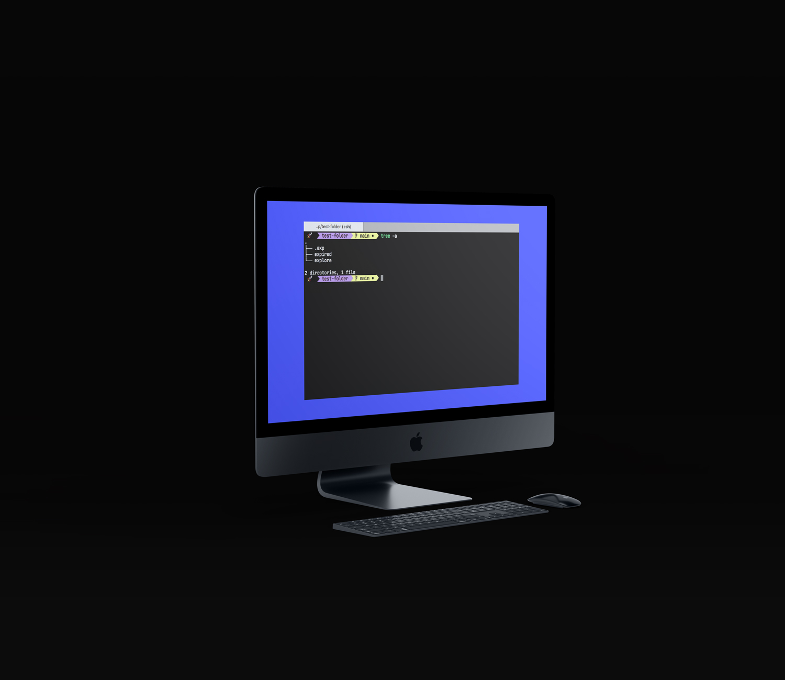

CLI to create an opinionated temporary folder structure, automatically get cleaned up after they're expired.
(2021)
19L12 — exp cli
CLI to create an opinionated temporary folder structure, automatically get cleaned up after they're expired. keeping disk-space size without worrying about heaviness of dependencies.
useful for people who wants to quickly inspect opensource project.
exp will create temp folder explore and to soon-to-be-deleted folder expire
files/folders live inside explore will be moved to expire 7 days after its last opened.
and then after next 7 days all files/folder will be deleted from expire folder.
The config file .exp will be created automatically and located at EXP_PATH When you first run exp init
normally you don't have to edit .exp. it is being used only for checking EXP_PATH.
installation
## download binary first
$ curl -LSfs https://japaric.github.io/trust/install.sh | \
sh -s -- --git karnpapon/exp
## check whether exp is installed.
exp -h
usage
cd to-your-target-path && exp init
put returned string (eg. export EXP_PATH=/your/target/path) into .profile or .zprofile (for zsh users) depends on what shell you're using, normally default would be .profile.
add exp command to your .profile or .zprofile.
everytime terminal is opened, exp will manage to check if any folder/file should be moved or deleted.
command
exp init = to create explore and expire folder and .exp (config file).
exp = to check if file/folder is valid (ready to move/delete).